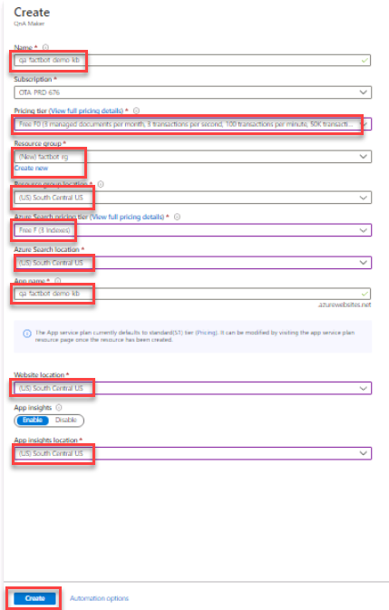
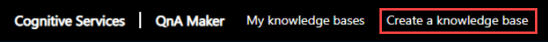
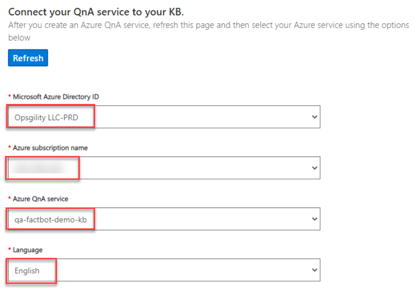
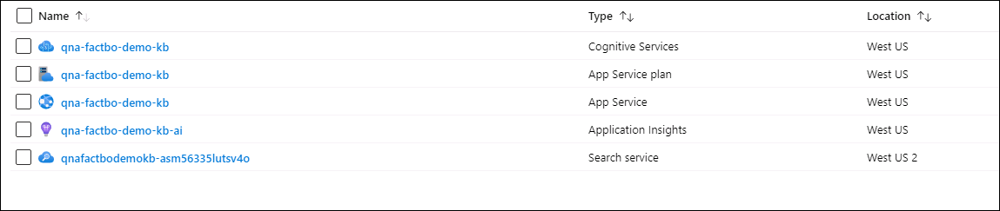
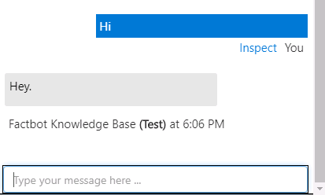

Software bots are everywhere. You probably interact with them every day without realizing it. Bots, especially chat and messenger bots, are changing the way we interact with businesses, communities, and even each other. Thanks to light-speed advances in artificial intelligence (AI) and the ready availability of AI services, bots are not only becoming more advanced and personalized, but also more accessible to developers.
Regardless of the target language or platform, developers building bots face a variety of challenges. In order to be fully capable and useful:
Bots must be able process input and output intelligently
Bots need to be responsive, scalable, and extensible
Bots need to work cross-platform
Bots need to interact with users in a conversational manner, ideally in the language that the user chooses
The Azure Bot Service, combined with Microsoft QnA Maker, provides the tools developers need to build and publish intelligent bots which interact naturally with users using a range of services. In this lab, you will create a bot using the Azure Bot Service and connect it to a knowledge base built with QnA Maker. Then you will interact with the bot using Skype — one of many popular services with which bots built with the Azure Bot Service can integrate.
In this hands-on lab, you will learn how to:
Create a knowledge base, populate it with data, and connect it to a bot
Create an Azure Web App Bot to host a bot
Implement bots in code and debug the bots that you build
Publish bots and use continuous integration to keep them up to date
Debug bots locally using Visual Studio Code and the Microsoft Bot Framework Emulator
Plug a bot into Teams and interact with it there
Launch a browser from the virtual machine desktop and navigate to the URL below. Your Azure Credentials are available by clicking the Cloud Icon at the top of the Lab Player.
https://portal.azure.comMicrosoft QnA Maker is part of Azure Cognitive Services, which is a suite of services and APIs for building intelligent apps backed by AI and machine learning. Rather than code a bot to anticipate every question a user might ask and provide a response, you can connect it to a knowledge base of questions and answers created with QnA Maker. A common usage scenario is to create a knowledge base from a FAQ so the bot can answer domain-specific questions such as “How do I find my Windows product key” or “Where can I download Visual Studio Code?”
In this exercise, you will use QnA Maker to create a knowledge base containing questions such as “What NFL teams have won the most Super Bowls” and “What is the largest city in the world?” Then you will deploy the knowledge base in an Azure Web app so it can be accessed via an HTTPS endpoint.
Expand the portal’s left navigation by clicking Show portal menu in the top left. Click + Create a resource, search for and select QnA Maker then click Create.


In the blade that appears, enter the following configuration then click Create.
Name: Enter a unqiue name
Pricing tier: Free F0
Resource group: (Create new) factbot-rg
Resource group location: The region closest to you
Azure Search pricing tier: Free F
Azure search location: The region closest to you
App name: Enter the name you used in the first Name field
Website location: The region closest to you
App insights location: The region closest to you
Note: If you see a message about the Microsoft.Search resource provider not being registered wait 3-4 minutes and try again. It will automatically register, but the call will not succeed until registration is completed.

After the resources are created in the Azure Portal, open the Microsoft QnA Maker portal in a second tab in your browser and click Sign in. Then click Create a knowledge base in the menu bar at the top of the page.
https://www.qnamaker.ai/
Scroll down to Connect your QnA service to your KB and enter the following configuration. select your Microsoft Azure Directory ID, Azure subscription name, Azure QnA Service, and Language from the drop downs.
Microsoft Azure Directory ID: Leave the default value selected
Azure subscription name: Select the lab subscription
Azure QnA Service: Select the QnA service you created earlier
Language: Select a language

Scroll down to the section that says Name your KB. Name the KB Factbot Knowledge Base.
Factbot Knowledge BaseScroll down to the section that says Populate your KB, click + Add File and browse to C:\SkillMeUp and select the Factbot.tsv file.
Set Chit-chat to Witty.
At the bottom of the page, click Create your KB.
In the Azure Portal, click Resource groups in the left navigation and open the factbot-rg resource group. Wait until “Deploying” changes to “Succeeded” at the top of the blade indicating that the QnA service and the resources associated with it were successfully deployed. Once more, you can click Refresh at the top of the blade to refresh the deployment status.

In the QnA Maker portal, click My Knowledge Bases at the top then click the Factbot Knowledge base.
Once the Knowledge Base is open, click Save and train and wait for training to complete.

Click the Test button to the right of the Save and train button. Enter Hi into the message box and press Enter. Confirm that the response is Hey as shown below.

Enter What book has sold the most copies? into the message box and press Enter. What is the response?
Click the Test button again to collapse the Test panel. Then click Publish in the menu at the top of the page, and click Publish button at the bottom of the page to publish the knowledge base. Publishing makes the knowledge base available at an HTTPS endpoint.

Wait for the publication process to complete and confirm that you are told the QnA service has been deployed. With the knowledge base now hosted in an Azure Web App of its own, the next step is to deploy a bot that can use it. Do not close this window, because you will use this website to launch the bot creation process.
After you have completed the exercise, click Next to move to the next exercise.